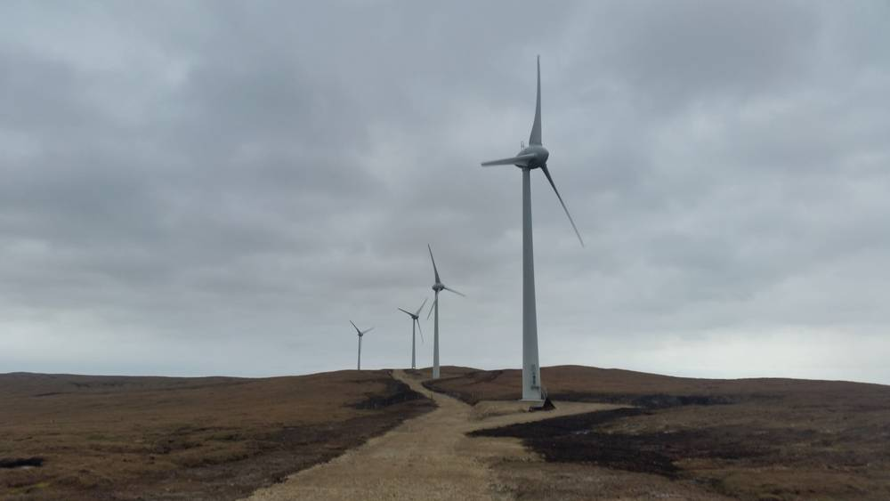

셰틀랜드 지역에너지 활동가들 "스코틀랜드 지역에너지 지원금, 여러 해에 걸쳐 주도록 바꿔 달라"

가을에 배정받은 CARES 자금은 이듬해 3월 중순까지 써야…큰 사업을 쪼개 공사가 겨울로 밀려
스코틀랜드 셰틀랜드 제도의 지역에너지 활동가와 개발회사들이 스코틀랜드 정부에 지역에너지 지원 방식을 여러 해에 걸친 재정 지원으로 바꿔 달라고 요구했다. 이들은 공공재정 담당 장관이자 셰틀랜드 지역구 의원인 해나 메리 구들래드(Hannah Mary Goodlad)에게 서한을 보내, 곧 나올 스코틀랜드 예산에 '지역·재생에너지 사업(CARES)' 자금을 다년 단위로 배정할 수 있는 조항을 넣어 달라고 촉구했다. 서한에 따르면 가을에 배정된 CARES 자금은 3월 중순까지 써야 해서, 큰 사업이 작은 단계로 쪼개지고 조달이 되풀이돼 비용이 늘며 공사도 겨울에 몰린다. 영국 그레이트 브리티시 에너지(Great British Energy)가 운영하는 비슷한 기금과 스코틀랜드 정부의 기후도전기금은 다년 단위인데 CARES만 엄격한 연 단위라는 점도 짚었다. 서한에는 노스옐 등 셰틀랜드 곳곳의 주민 단체 대표들이 서명했다. 스코틀랜드 정부의 에너지 장관은 올해 앞서 CARES가 지금까지 스코틀랜드 지역사회에 8,300만 파운드 넘게 전달돼 1,200여 개 사업과 75MW의 재생에너지 설비를 뒷받침했다고 밝혔다.
시민에너지 관점
8,300만 파운드가 1,200여 개 사업과 75MW로 이어졌다는 숫자는 작은 지원금이 모여 실제 발전 설비가 된다는 증거다. 셰틀랜드 노스옐 개발협의회의 4.5MW 가스(Garth) 풍력단지처럼 주민이 소유한 발전소는 섬 경제를 떠받쳐 왔다. 다년 지원은 재정 부담이 커지거나 낭비로 이어질 수 있다는 우려가 있지만, 주민 사업은 구상에서 시공까지 몇 해가 걸리는 만큼 단계별 성과를 점검하며 약속된 자금을 이어 주는 편이 오히려 돈을 덜 낭비한다. 한국의 햇빛소득마을 같은 지원 사업도 한 해 안에 끝내야 하는 예산 구조를 다년 약정으로 바꿔, 마을이 공사 시기를 스스로 정하도록 해야 한다.
출처: Shetland News 2026-11-10 Chris Cope 원문 보기
シェトランドの地域エネルギー関係者「スコットランドの地域エネルギー支援金を複数年で支給してほしい」
秋に配分されるCARES資金は翌年3月中旬までに使う必要…大きな事業を小分けにし、工事が冬に集中
スコットランドのシェトランド諸島の地域エネルギー関係者と開発会社が、スコットランド政府に対し、地域エネルギーの支援方式を複数年にわたる財政支援へ改めるよう求めた。彼らは公共財政担当大臣でシェトランド選出議員のハンナ・メアリー・グッドラッド（Hannah Mary Goodlad）氏に書簡を送り、近く示されるスコットランド予算に「コミュニティー・再生可能エネルギー事業（CARES）」の資金を複数年単位で配分できる条項を盛り込むよう促した。書簡によると、秋に配分されたCARES資金は3月中旬までに使わなければならず、大きな事業が小さな段階に分割されて調達が繰り返されるため費用が増え、工事も冬に集中する。英国のグレート・ブリティッシュ・エナジー（Great British Energy）が運営する同様の基金やスコットランド政府の気候チャレンジ基金は複数年単位なのに、CARESだけが厳格な単年度だという点も指摘した。書簡にはノース・イェルなどシェトランド各地の住民団体の代表が署名した。スコットランド政府のエネルギー担当大臣は今年初め、CARESがこれまでスコットランドの地域社会に8,300万ポンド超を届け、1,200超の事業と75MWの再生可能エネルギー設備を支えてきたと述べている。
市民エネルギーの視点
8,300万ポンドが1,200超の事業と75MWにつながったという数字は、小さな支援金が積み重なって実際の発電設備になることを示している。シェトランドのノース・イェル開発協議会の4.5MWガース（Garth）風力発電所のように、住民が所有する発電所は島の経済を支えてきた。複数年支援は財政負担の増大や無駄につながるとの懸念もあるが、住民の事業は構想から施工まで数年かかるため、段階ごとに成果を点検しながら約束した資金をつなぐ方が、むしろ無駄が少ない。韓国の햇빛소득마을のような支援事業も、1年以内に終えねばならない予算の仕組みを複数年の約定に改め、村が工事の時期を自ら決められるようにすべきだ。
出典: Shetland News 2026-11-10 Chris Cope 原文を読む
设得兰社区能源工作者呼吁：苏格兰社区能源资助应改为多年期拨付
秋季拨付的CARES资金须在次年3月中旬前用完…大项目被拆成小阶段，施工被挤到冬季
苏格兰设得兰群岛的社区能源工作者和开发公司，呼吁苏格兰政府把社区能源的资助方式改为跨多年的财政支持。他们致信公共财政大臣、同时也是设得兰选区议员的汉娜·玛丽·古德拉德（Hannah Mary Goodlad），敦促在即将公布的苏格兰预算中加入条款，允许以多年期方式拨付“社区与可再生能源计划”（CARES）资金。信中说，秋季拨付的CARES资金必须在3月中旬前用完，这使大项目被拆成小阶段，重复采购推高成本，施工也被挤到冬季。信中还指出，英国大不列颠能源公司（Great British Energy）管理的类似基金以及苏格兰政府的气候挑战基金都是多年期，唯独CARES严格按年度拨付。信件由北耶尔等设得兰各地居民团体的代表共同签署。苏格兰政府能源大臣今年早些时候表示，CARES迄今已向苏格兰各社区提供超过8,300万英镑，支持了1,200多个项目和75MW的可再生能源装机。
市民能源视角
8,300万英镑带动1,200多个项目和75MW装机，这一数字证明小额资助汇聚起来能变成实实在在的发电设备。像设得兰北耶尔开发委员会的4.5MW加思（Garth）风电场那样，居民拥有的电站一直支撑着岛上的经济。有人担心多年期资助会加重财政负担或造成浪费，但居民项目从构想到施工需要数年，在逐阶段检查成果的同时延续已承诺的资金，反而更少浪费。韩国햇빛소득마을这类支持项目，也应把必须在一年内花完的预算结构改为多年期约定，让村庄自己决定施工时间。
来源: Shetland News 2026-11-10 Chris Cope 查看原文
Shetland Community Energy Workers Urge Scottish Government to Fund Community Energy Over Several Years
CARES money awarded in autumn must be spent by mid-March, forcing big projects into smaller phases and pushing construction into winter
Community energy workers and development companies in Shetland, Scotland, are asking the Scottish Government to change how it funds community energy, moving to financing that runs over several years. In a letter to public finance minister and Shetland MSP Hannah Mary Goodlad, they urged her to include provisions in the coming Scottish budget so that funding from the Community and Renewable Energy Scheme (CARES) can be awarded on a multi-year basis. The letter says CARES money awarded in the autumn must be spent by mid-March, which splits larger projects into smaller phases, adds cost through repeated procurement and pushes construction into the winter months. It also points out that a similar fund run by Great British Energy and the Scottish Government's Climate Challenge Fund both worked over several years, while CARES is strictly annual. Representatives of community groups across Shetland, including North Yell, signed the letter. Scotland's energy minister said earlier this year that CARES has so far delivered more than 83 million pounds to communities across Scotland, supporting more than 1,200 projects and 75MW of renewable energy capacity.
Citizen Energy View
The figures, 83 million pounds behind more than 1,200 projects and 75MW, show that small grants add up to real generating capacity. Community-owned plants such as the 4.5MW Garth wind farm of North Yell Development Council have long supported island economies in Shetland. Some worry that multi-year funding raises costs or invites waste, but community projects take years from idea to construction, and releasing promised money in stages against checked progress wastes less. Korean support schemes such as the Sunlight Income Villages (햇빛소득마을) should likewise replace budgets that must be spent within a year with multi-year commitments, so villages can choose their own construction timing.
Source: Shetland News 2026-11-10 Chris Cope Read the original